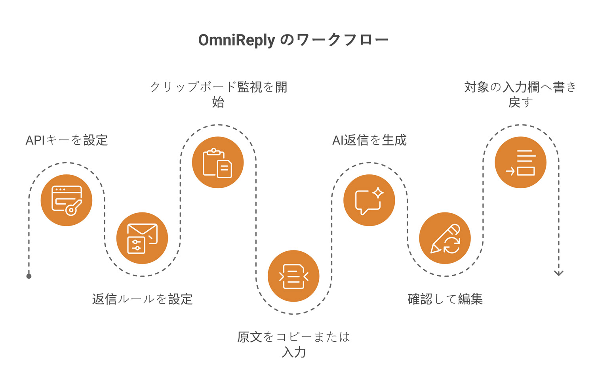
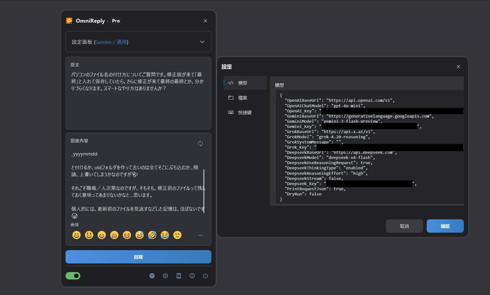
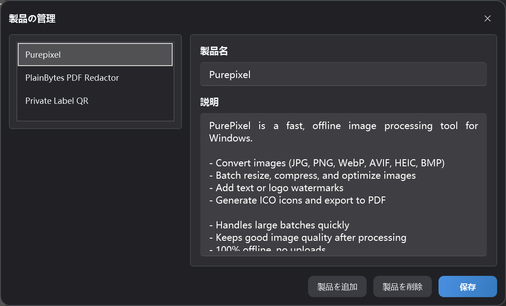

クリップボード連動の AI 返信アシスタント
OmniReply マニュアル
本マニュアルでは、OmniReply の画面、設定方法、AI 返信の生成フロー、書き戻しの動作を説明します。まずクイックスタートで一度流れを試し、詳細は機能の説明を参照してください。
1. OmniReply について
OmniReply はメッセージを自動送信するためのツールではなく、「原文を理解し、候補返信を生成し、人が確認してから対象アプリへ入力する」流れを短くするためのものです。
1.1 OmniReply とは
OmniReply は Windows 向けの AI クイック返信ツールです。クリップボードのテキストを監視し、選択したモデル、シーン、言語、スタイル、返信の目的、返信の長さに合わせて返信を生成します。結果は編集可能な返信欄に表示され、確認後に対象アプリの入力欄へ書き戻せます。
1.2 こんな場面で
SNS でのやりとり
コメント、DM、投稿への返信など、自然で文脈に沿った文案を用意できます。
カスタマーサポート
ユーザーの質問から、説明、安心させる文面、提案、次のステップを素早く整理できます。
製品のおすすめ
製品情報をもとに、短いおすすめ、機能説明、比較返信を作成できます。
1.3 基本的な流れ

-
API Key を設定
設定で利用する AI サービスの API Key を入力します。
-
返信ルールを設定
AI モデル、シーン、返信言語、文体、返信の目的、返信の長さを選びます。
-
クリップボード監視を開始
クリップボード監視をオンにします（Ctrl+Shift+X）。フローティングボールがカラー表示になると動作中です。
-
原文をコピーまたは入力
質問、コメント、メッセージをコピー（Ctrl+C）するか、原文を直接入力します。
-
AI 返信を生成
OmniReply が原文と返信ルールに基づき返信の下書きを生成します。
-
確認して編集
生成結果を確認し、必要に応じて表現、詳細、絵文字を調整します。
-
対象入力欄へ書き戻し
対象の入力欄をクリックしてから「書き戻し」を押すか、Ctrl+Shift+Enter を押します。
2. 画面と機能の概要
日常の操作はフローティングのメインウィンドウで行います。設定ウィンドウと製品管理は、初期設定時などに使います。

2.1 メインウィンドウ
| エリア | 役割 | ヒント |
|---|---|---|
| タイトルバー | アプリ名と現在のライセンス状態を表示。フローティングボールに折りたためます。 | 画面を占有したくないときは折りたたみ、コピーを待つ運用に便利です。 |
| 設定パネル | モデル、シーン、言語、スタイル、目的、長さ、製品を選択します。 | ルールを変更したら再生成し、古い返信設定のまま使わないようにします。 |
| 原文エリア | クリップボードで取得した内容を表示。手入力も可能です。 | コピーが不便なときや、先に原文を直したいときに使います。 |
| 返信エリア | AI が生成した返信を表示し、編集できます。 | 送信や書き戻し前に、事実、トーン、機微情報を必ず確認してください。 |
| 絵文字バー | よく使う絵文字を返信に挿入します。 | 挿入されるのはテキスト文字なので、後から編集・削除できます。 |
| ステータスバー | クリップボード監視、言語、設定、OmniReply について、終了を操作します。 | 初回利用時は、先にクリップボード監視をオンにしてください。 |
2.2 フローティングボール
ウィンドウを折りたたむとフローティングボールになります。ドラッグ移動、ダブルクリックで展開ができ、見た目でサービスの状態も分かります。カラー表示はクリップボード監視がオン、グレー表示はオフです。新しいテキストをコピーすると取得が始まり、モデル応答待ちの間はリクエスト中の表示になります。
2.3 設定ウィンドウ
モデル設定
OpenAI、Gemini、Grok、DeepSeek の API Key、ベース URL、モデル名を管理します。
ネットワーク設定（未提供）
必要に応じて手動 HTTP プロキシを有効化します。無効時はシステムのプロキシ設定を使用します。
ショートカット設定
ウィンドウ表示、サービス開始/停止、返信の再取得、書き戻しのグローバルショートカットを変更します。
ファイル設定
履歴フォルダーを指定します。未指定の場合、履歴は保存されません。
2.4 製品管理
現在のプロファイル内の製品名と説明を管理します。返信の目的が製品おすすめのとき、選択中の製品説明が AI へのコンテキストとして送られ、返信が製品の特徴に沿いやすくなります。

3. クイックスタート
初回は次の順序で進めてください。一度流れが分かれば、日常は原文のコピー、返信の確認、書き戻しが中心になります。
API Key を追加
設定ウィンドウを開き、モデル設定で利用する AI サービスの API Key を入力します。使わないサービスは空欄のままで構いません。現在選択中のモデルには有効な Key が必要です。
返信ルールを設定
メインウィンドウでモデル、シーン、言語、スタイル、返信の目的、返信の長さを選びます。製品おすすめの場合は、該当する製品情報も選択してください。
クリップボード監視を開始
ステータスバーのクリップボード監視スイッチをオンにするか、Ctrl + Shift + X でサービスを開始します。
原文をコピーまたは入力
他アプリから質問、コメント、メッセージをコピーします。原文エリアへ直接入力してから手動で再取得することもできます。
AI 返信を生成
新しい内容をコピーすると、OmniReply が原文を読み取り現在のモデルを呼び出します。再生成する場合は更新ボタンを押すか、Ctrl + Shift + R を押します。
確認して編集
返信欄は編集可能です。トーンの調整、削除、情報の追加、絵文字の挿入ができます。AI 生成だからといって確認を省略しないでください。
対象入力欄へ書き戻し
対象アプリの入力欄をクリックしてカーソルを置き、「書き戻し」をクリックするか、Ctrl + Shift + Enter を押します。
4. 機能の詳細
各設定項目の意味と、最終的な返信への影響を説明します。
4.1 AI モデルと API Key
| モデル | 必要な設定 | 説明 |
|---|---|---|
| ChatGPT (OpenAI) | OpenAI_Key |
OpenAI 互換の Chat Completions エンドポイントを使用。ベース URL とモデル名を設定できます。 |
| Gemini (Google) | Gemini_Key |
Google Gemini を使用。Gemini のベース URL とモデル名を設定できます。 |
| Grok (xAI) | Grok_Key |
xAI Grok を使用。ベース URL、モデル名、システムメッセージを設定できます。 |
| DeepSeek (DeepSeek) | Deepseek_Key |
OpenAI 互換リクエスト、または DeepSeek reasoning 形式のリクエスト設定に対応。 |
選択中のモデルに対応する Key が必要です。使わないサービスは未入力のままで構いません。
4.2 返信ルール
| ルール | 効果 | おすすめ |
|---|---|---|
| シーン | SNS、フォーラム、サポートなど、返信のプラットフォームや文脈を決めます。 | 実際の利用環境に最も近いシーンを選んでください。 |
| 言語 | 出力言語を制御します。「自動」は原文の文脈に合わせます。 | 固定言語が必要な場合は「自動」を使わないでください。 |
| スタイル | トーン、ペルソナ、表現を制御します。 | 公開コメントでは、自然で親しみやすく、押し付けがましくない文体が無難です。 |
| 返信の目的 | おすすめ、サポート、説明、反論など、返信の意図を決めます。 | 内容の方向性に大きく影響するため、生成前に確認してください。 |
| 返信の長さ | 短い、中程度、詳しいなど出力量を制御します。 | SNS では短めまたは自動が使いやすいことが多いです。 |
4.3 製品おすすめ情報
製品名と説明で構成されます。おすすめ系の目的を選ぶと、選択中の製品説明が AI へのコンテキストとして送られます。説明には次を含めるとよいでしょう。
- どんな課題を解決するか。
- 主な機能と強み。
- どんなユーザー・場面向けか。
- オフライン可否、データ送信の有無、重要な制限。
- 誇大表現を避け、現実的な説明にする。
4.4 クリップボード監視
監視をオンにすると、システムのクリップボード更新を待ち受け、新しいテキストを読み取ります。誤作動を減らすため、空文字、同一内容の繰り返し、OmniReply 自身のウィンドウがアクティブなときのコピーは無視します。
4.5 編集と絵文字
返信エリアは編集可能なテキストボックスです。AI 生成文を直接書き換えたり、絵文字バーやポップアップから Unicode 絵文字を挿入できます。環境によって WPF 上ではカラー表示されない場合がありますが、文字自体は標準の絵文字です。
4.6 書き戻しとショートカット
書き戻し時は OmniReply ウィンドウを一度隠し、対象入力欄のフォーカス復帰を短く待ってから、1 文字ずつキー入力をシミュレートします。改行は Enter キーのシミュレートで処理します。既定のショートカットは次のとおりです。
| 操作 | 既定のショートカット |
|---|---|
| メインウィンドウの表示/非表示 | Ctrl + Shift + D |
| クリップボード監視の開始/停止 | Ctrl + Shift + X |
| 返信を再生成 | Ctrl + Shift + R |
| 返信を書き戻し | Ctrl + Shift + Enter |
4.7 履歴
ファイル設定で履歴フォルダーを指定すると、OmniReply は JSONL 形式で原文、返信内容、リクエスト時刻を保存します。フォルダー未指定の場合は履歴を書き込みません。
5. データ、プライバシー、ライセンス
OmniReply の設定とプロファイルデータはローカルに保存されます。モデルへのリクエストは、選択した AI サービスへ直接送信されます。
5.1 ローカルに保存されるデータ
| データ | 説明 | ユーザーの管理方法 |
|---|---|---|
| アプリ設定 | モデル URL、API Key、プロキシ、ショートカット、履歴フォルダーなど。 | 設定ウィンドウで確認・変更。 |
| プロファイルと製品情報 | 現在のプロファイル、製品一覧、選択中のシーンとルール。 | メインウィンドウと製品管理で編集。 |
5.2 AI リクエストに含まれる内容
返信生成時、OmniReply は原文、現在の返信ルール、必要な製品コンテキスト、モデルへのリクエストパラメータを選択中の AI サービスへ送ります。各サービスはご自身の API Key で呼び出され、中継サーバーは経由しません。
5.3 API Key の安全
- API Key を含む設定ファイルを他人と共有しないでください。
- 共用 PC では、終了前に設定と履歴を適切に扱ってください。
- 機微な内容をコピーする前に、利用する AI サービスのプライバシーポリシーとデータ取扱いを確認してください。
- 履歴フォルダー未設定の場合、OmniReply は原文と返信履歴を保存しません。
5.4 無料版と Pro
| エディション | 説明 |
|---|---|
| Free（無料版） | 1 暦日あたり最大 10 回のモデル生成。一部ルール選択に制限がある場合があります。 |
| Pro | Pro 機能を利用可能。購入とライセンス状態はアプリ内のライセンス画面で確認できます。 |
6. よくある質問とトラブルシューティング
想定どおり動かない場合は、まずここを確認してください。多くは監視スイッチ、API Key、プロキシ、ショートカットの競合、入力欄のフォーカスが原因です。
6.1 コピーしても反応しない
次の順に確認してください。
- ステータスバーでクリップボード監視がオンか。
- コピー内容がプレーンテキストで、空でないか。
- 前回の AI リクエストの完了待ちになっていないか。
- 前回と全く同じ内容をコピーしていないか。
- OmniReply 自身のウィンドウ内でコピーしていないか（アクティブ時のコピーは無視されます）。
6.2 API Key が未設定
選択中モデルのサービスに Key がありません。設定ウィンドウで Key を入力するか、設定済みのモデルに切り替えてください。
6.3 AI リクエスト失敗またはタイムアウト
Key 無効、クォータ不足、サービス混雑、ネットワーク障害、プロキシ設定ミス、タイムアウトなどが考えられます。ブラウザとシステムプロキシから AI サービスへ到達できるか確認し、設定のベース URL、モデル名、Key を見直してください。
6.4 言語や文体が想定と異なる
言語、シーン、スタイル、返信の目的、返信の長さを確認してください。OpenAI 互換モデルでは固定言語がシステムプロンプトに含まれます。不安定な場合は目的言語を明示して再生成してください。
6.5 書き戻し先が間違った
書き戻し前に対象入力欄をクリックし、カーソル位置を確認してください。書き戻しはキー入力のシミュレートのため、フォーカスが別ウィンドウやコントロールにあると、そちらに入力されます。
6.6 ショートカットが効かない
他アプリが同じショートカットを使っている可能性があります。設定のショートカットタブで Ctrl、Shift、Alt、Win を含む組み合わせに変更し、OS のショートカットと競合しないようにしてください。
6.7 絵文字の表示に問題がある
環境によって WPF テキストボックスではカラー絵文字が安定表示されないことがあります。OmniReply 上でモノクロに見えても、挿入・書き戻しされる文字は通常 Unicode 絵文字です。対象アプリでの表示はアプリとフォント依存です。
6.8 履歴が保存されない
ファイル設定で履歴フォルダーを指定した場合のみ保存されます。空欄の場合は記録されません。フォルダーが存在し、現在のユーザーが書き込み可能か確認してください。
6.9 サポート報告に含める内容
アプリ版、Windows 版、選択モデル、エラーメッセージ、プロキシ利用の有無、再現可否、再現手順、必要に応じたスクリーンショットを含めてください。実際の API Key は送らないでください。